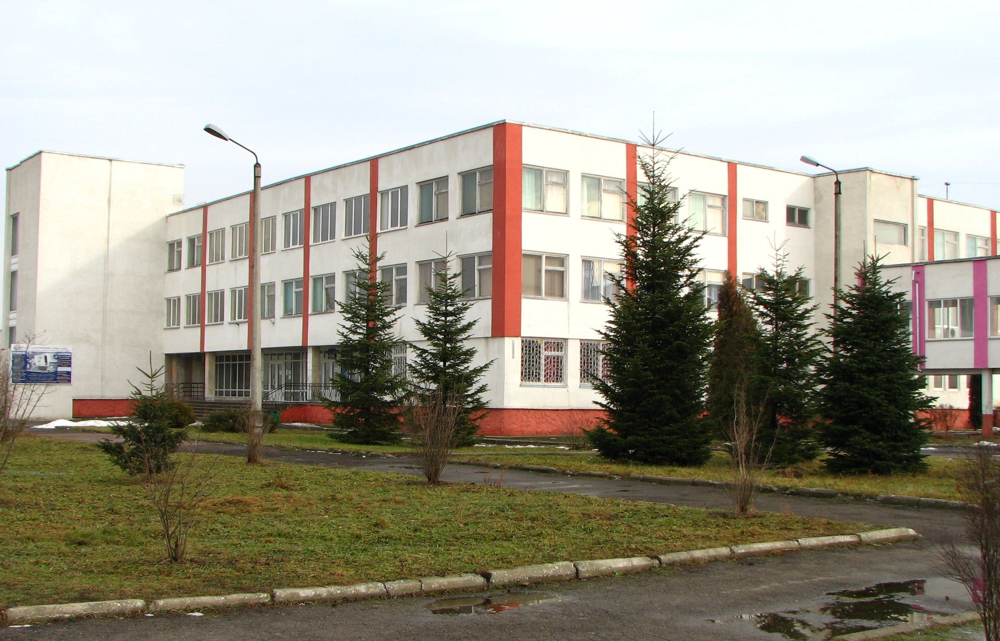

|
 |
 |
 |
 |
 |
 |
|
|  | Історія Коледжу електронних приладівКоледж електронних приладів Івано-Франківського національного технічного університету нафти і газу створено Постановою Кабінету Міністрів України № 526 від 29 травня 1997 року та наказом Міністерства освіти України № 218 від 20.06.1997 року на базі Івано-Франківського технікуму електронних приладів, який ліквідовано. Івано-Франківський вечірній технікум електронних приладів було створено Міністерством електронної промисловості колишньої держави (наказ № 499-ДСМ від 26 серпня в 1981 році), а 1988 році наказом цього ж Міністерства № 921 від 08 грудня технікум було реорганізовано в денний Івано-Франківський технікум електронних приладів, 29 листопада 1991 року наказом Міністерства вищої освіти України № 231 технікум підпорядкований Міністерству вищої освіти України. Візитна картка Коледжу електронних приладів |
|
|
|
|
|
|
|
|
Коледж електронних приладів ІФНТУНГу – це сучасний навчальний заклад в якому створено всі умови для підготовки молодшого спеціаліста, який здатен витримати конкуренцію на ринку праці.
В 2000 році Коледж електронних приладів ІФНТУНГу атестовано Державною атестаційною комісією. З метою координації спільної діяльності навчальних закладів на виконання законів України про освіту, про вищу освіту, впровадження системи ступеневої підготовки фахівців для потреб регіону коледж здійснює свою діяльність в навчально-науково виробничому комплексі ІФНТУНГу, співпрацює із НУ “Львівська політехніка”, Прикарпатським університетом ім. В.Стефаника, Чернівецьким національним університетом ім. Ю. Федьковича.
В межах комплексу розробляються складові галузевого стандарту освіти, залучаються провідні спеціалісти базових ВНЗ-ів ІІІ-ІV рівнів акредитації до роботи ДКК, випускники коледжу продовжують навчання в університетах зі споріднених спеціальностей за скороченими програмами підготовки.Структурні підрозділи коледжу функціонують відповідно до положень, які розроблені згідно з чинним законодавством.
Навчально-виховний процес в коледжі забезпечують117 викладачів, з них 101 штатних , 1 доктор технічних наук, професор,15 кандидатів наук, доцентів , 10 викладачів-методистів.Склад, кваліфікація, фахова освіта викладачів та адміністративно- управлінського персоналу відповідає вимогам навчальних планів і штатному розпису.
Коледж у своїй роботі керується чинним законодавством України, наказами Міністерства освіти і науки України, статутом ІФНТУНГу, положенням про коледж та правилами внутрішнього розпорядку, наказами ректора університету.
Зміст навчальних планів та програм, навчально-матеріальна база, якісний склад викладачів, які здійснюють фахову підготовку студентів, забезпечує регіональні потреби сучасної промисловості в молодших спеціалістах.
Навчально-лабораторна база, яка постійно розвивається, відповідає вимогам навчальних планів та програм, забезпечує сучасний рівень підготовки спеціалістів, має у своєму складі 46 навчальних кабінетів та лабораторій, 103 дисплейних місця.
Коледж має добру славу серед випускників, їхніх батьків та громадськості.
Педагогічний колектив навчального закладу усвідомлює мету і завдання освіти в Україні на зламі століть, шукає ефективні шляхи оновлення навчального-виховного процесу і з надією дивиться у майбутнє.
Коледж електронних приладів Івано-Франківського національного технічного
університету нафти і газу готує молодших спеціалістів зі
спеціальностей:
Конструювання, виробництво та технічне обслуговування виробів електронної техніки
Монтаж, технічне обслуговування і ремонт обладнання радіозв’язку, радіомовлення та телебачення
Електротеплотехнічні вимірювання
Обслуговування комп’ютеризованих інтегрованих і робототехнічних систем
Обслуговування верстатів з програмним управлінням і робототехнічних комплексів
Обслуговування комп’ютерних систем і мереж
Розробка програмного забезпечення
Економіка підприємства
Бухгалтерський облік
Випускники коледжу отримують дипломи з такими кваліфікаціями:
Технік-конструкторКонструювання, виробництво та технічне обслуговування виробів електронної техніки
Електромеханік засобів радіо і телебаченняМонтаж, технічне обслуговування і ремонт обладнання радіозв’язку, радіомовлення та телебачення
Технік з метрологіїЕлектротеплотехнічні вимірювання
ЕлектромеханікОбслуговування верстатів з програмним управлінням і робототехнічних комплексів
Технік із системного адмініструванняОбслуговування комп’ютеризованих інтегрованих і робототехнічних систем
Технік-програмістОбслуговування комп’ютерних систем та мереж
Технік-програмістРозробка програмного забезпечення
Молодший спеціаліст з економіки підприємстваЕкономіка підприємства
БухгалтерБухгалтерський облік